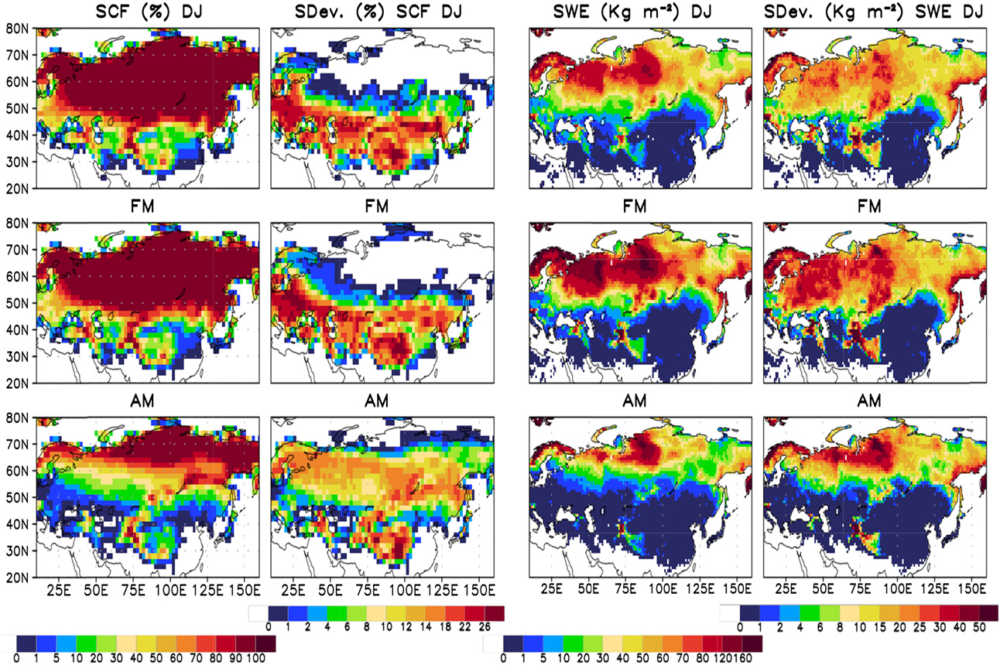
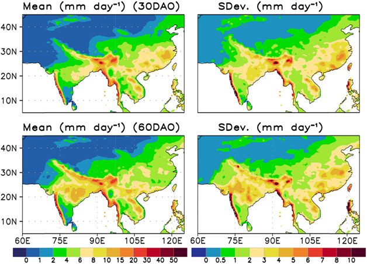
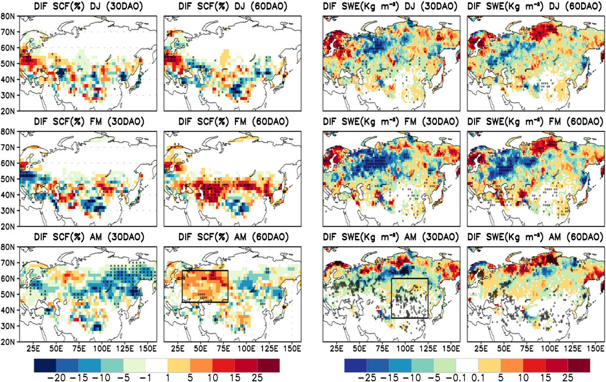
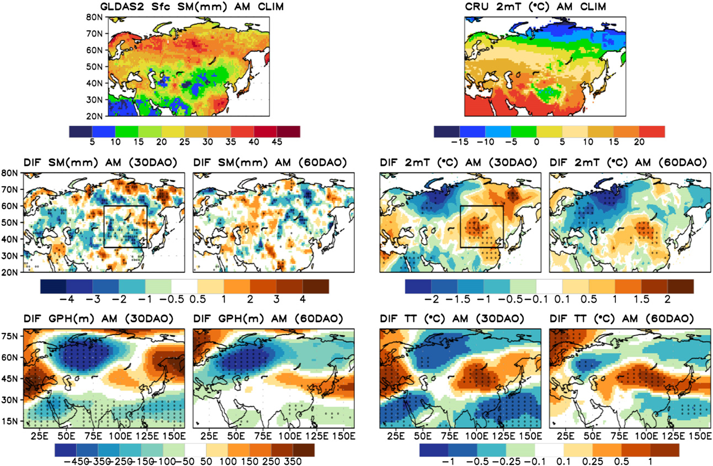
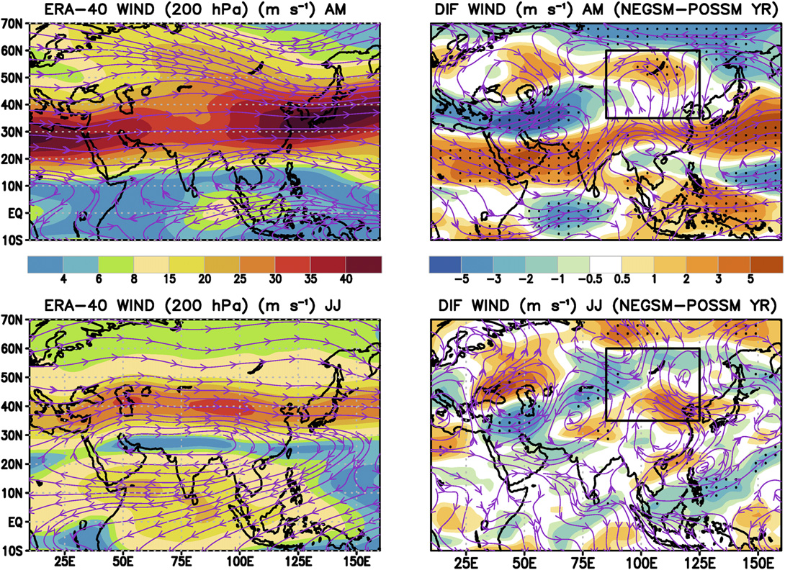
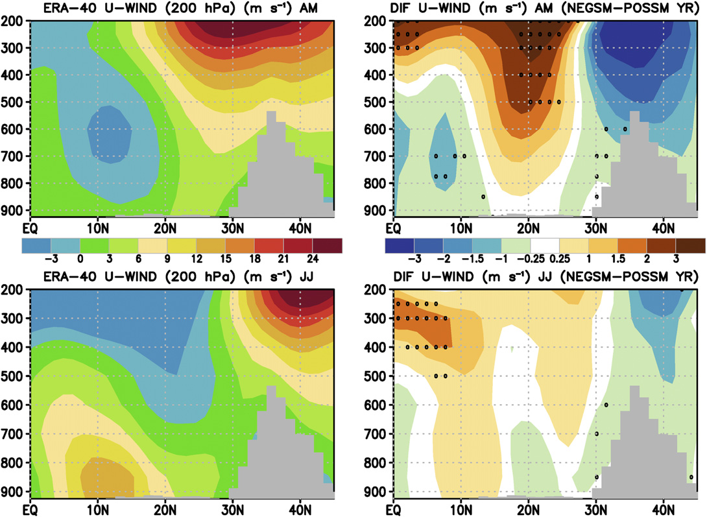
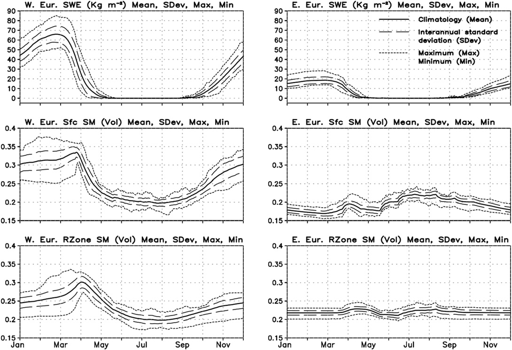
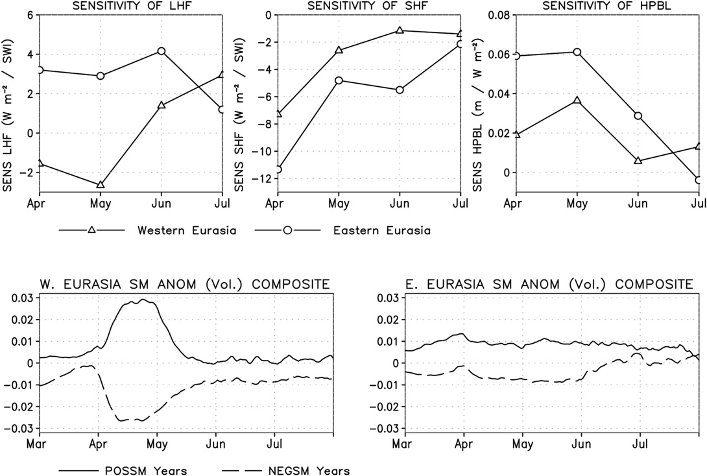
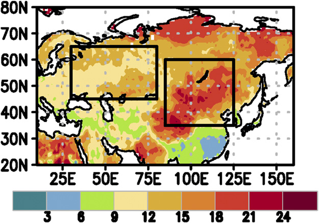
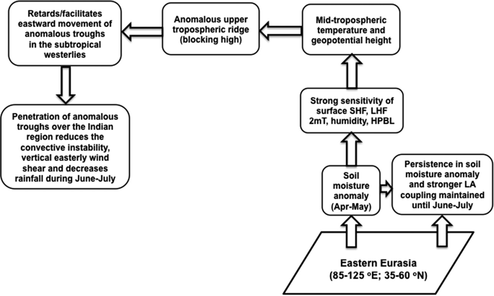

乔治梅森大学海洋—陆地—大气研究中心，弗吉尼亚州费尔法克斯
Center for Ocean–Land–Atmosphere Studies, George Mason University, Fairfax, Virginia
（稿件于2015年12月30日收到，最终定稿于2016年10月5日）
(Manuscript received 30 December 2015, in final form 5 October 2016)
DOI：10.1175/JCLI-D-16-0033.1
DOI: 10.1175/JCLI-D-16-0033.1
© 2017 美国气象学会。
© 2017 American Meteorological Society.
有关本内容再利用及一般版权的信息，请参阅美国气象学会版权政策（www.ametsoc.org/PUBSReuseLicenses）。
For information regarding reuse of this content and general copyright information, consult the AMS Copyright Policy (www.ametsoc.org/PUBSReuseLicenses).
通讯作者电子邮箱：Subhadeep Halder，shalder3@gmu.edu
Corresponding author e-mail: Subhadeep Halder, shalder3@gmu.edu
摘要
ABSTRACT
这项基于观测的研究表明，欧亚地区和青藏高原积雪及融雪的延迟水文响应，对季风爆发后最初两个月印度夏季风降水的变率具有重要影响。
This observationally based study demonstrates the importance of the delayed hydrological response of snow cover and snowmelt over the Eurasian region and Tibet for variability of Indian summer monsoon rainfall during the first two months after onset.
基于1967—2003年的积雪覆盖率和雪水当量资料，研究表明，尽管积雪—反照率效应在欧亚大陆西部普遍存在，但延迟水文效应在其东部强烈且持久。
Using snow cover fraction and snow water equivalent data during 1967–2003, it is demonstrated that, although the snow-albedo effect is prevalent over western Eurasia, the delayed hydrological effect is strong and persistent over the eastern part.
东亚和青藏高原较长的土壤湿度记忆，以及地表通量对土壤湿度变化的高度敏感性，构成了一种机制，使冬春季降雪异常所产生的土壤湿度异常能够影响夏季最初几个月的降水。
Long soil moisture memory and strong sensitivity of surface fluxes to soil moisture variations over eastern Asia and Tibet provide a mechanism for soil moisture anomalies generated by anomalies in winter and spring snowfall to affect rainfall during the initial months in summer.
欧亚大陆东部偏干的土壤湿度异常与地表和对流层中层的异常加热相联系，有助于将100°E附近的异常对流层高层“阻塞脊”锚定并使其持续存在。
Dry soil moisture anomalies over the eastern Eurasian region associated with anomalous heating at the surface and midtroposphere help in anchoring of an anomalous upper-tropospheric “blocking” ridge around 100°E and its persistence.
这不仅导致副热带西风急流长时间减弱，还使其位置南移至30°N以南，随后西风带中的异常槽侵入印度地区。
This not only leads to prolonged weakening of the subtropical westerly jet but also shifts its position southward of 30°N, followed by penetration of anomalous troughs in the westerlies into the Indian region.
与此同时，中纬度冷干空气的侵入会降低对流不稳定度，进而减少季风爆发后印度地区的降水。
Simultaneously, intrusion of cold and dry air from the midlatitudes can reduce the convective instability and hence rainfall over India after the onset.
这种急流南移还会显著削弱夏季印度地区的东风垂直切变，从而导致降水减少。
Such a southward shift of the jet can also significantly weaken the vertical easterly wind shear over the Indian region in summer and lead to decrease in rainfall.
通过土壤湿度—蒸发—降水反馈，这种延迟水文效应还有可能调节业务预报模式中温度和降水的积雪—大气耦合强度。
This delayed hydrological effect also has the potential to modulate the snow–atmosphere coupling strength for temperature and precipitation in operational forecast models through soil moisture–evaporation–precipitation feedbacks.
1. 引言
1. Introduction
积雪在地球气候系统中发挥着重要作用（Xu and Dirmeyer 2011），并且是潜在的可预报性来源（Douville 2010）。
Snow cover plays a significant role in Earth’s climate system (Xu and Dirmeyer 2011) and is a potential source of predictability (Douville 2010).
积雪—大气耦合以两种方式表现：瞬时积雪—反照率效应（Dickinson 1983; Hall et al. 2008）和延迟水文效应（Cohen and Rind 1991; Xu and Dirmeyer 2013a,b）。
Snow–atmosphere coupling manifests in two ways: an instantaneous albedo effect (Dickinson 1983; Hall et al. 2008) and a delayed hydrological effect (Cohen and Rind 1991; Xu and Dirmeyer 2013a,b).
反照率效应直接影响地表吸收的辐射，并由此通过非绝热加热/冷却改变湍流通量、地表温度以及空气的密度和温度。
The albedo effect directly influences absorbed surface radiation and thereby alters turbulent fluxes, surface temperature, and the density and temperature of air by diabatic heating/cooling.
它还取决于短波太阳辐射的可获得量；因此，随着冬季向春季推进，反照率效应应当增强。
It also depends on the availability of shortwave insolation; hence, the albedo effect should become stronger as winter progresses into spring.
另一方面，春季融雪所产生的土壤湿度异常可以调节陆—气耦合（Xu and Dirmeyer 2011），并可作为由积雪驱动的延迟反馈，与大气相互作用延续至夏季。
On the other hand, soil moisture anomalies generated from snowmelt during the spring can modulate land–atmosphere coupling (Xu and Dirmeyer 2011) and act as a delayed snow-driven feedback with the atmosphere into summer.
除积雪反照率所产生的正反馈（Wiscombe and Warren 1980; Xu and Dirmeyer 2013a）外，还存在由降雪—大气稳定度关系（Walland and Simmonds 1996）引起的负反馈，后者具有自我调节性质。
Besides the positive feedback due to snow albedo (Wiscombe and Warren 1980; Xu and Dirmeyer 2013a), there is also a negative feedback due to snowfall–atmospheric stability relationships (Walland and Simmonds 1996) that is self-regulating in nature.
在冬季的某些高纬度地区，随着积雪覆盖突然增加，对流层低层温度可能下降，从而导致静力稳定度增强，并形成不利于进一步降雪的条件。
In certain high-latitude regions in winter, the lower-tropospheric temperature may decrease with a sudden increase in snow cover, leading to increased static stability and unfavorable conditions for further snowfall.
积雪升华和风力再分配会进一步减少积雪量。
Sublimation and redistribution by wind would further reduce the snow amount.
然而，随后感热通量的增加和稳定度的降低将再次创造有利于暴风雪发生和积雪覆盖增加的条件。
However, the ensuing increase in sensible heat fluxes and reduction in stability would create conditions suitable for snowstorms and increased snow cover once again.
积雪升华、压实、融化以及径流生成等过程具有高度非线性且十分复杂。
Processes such as snow sublimation, compaction, melting, and generation of runoff are highly nonlinear and complicated.
此外，这些过程在气候模式中的表征并不准确（Niu and Yang 2006）。
Even more, their representation in climate models is not accurate (Niu and Yang 2006).
尽管存在这些不足，Xu and Dirmeyer (2011, 2013b) 仍通过一个气候模式证明了积雪水文效应在决定冬春季陆—气耦合方面的重要性；这一效应可能与欧亚大陆积雪覆盖同印度夏季风之间已确立的反向关系有关（Turner and Slingo 2011; Saha et al. 2013）。
Despite these shortcomings, the importance of snow hydrological effects in determining the land–atmosphere coupling during winter and spring has been demonstrated in a climate model by Xu and Dirmeyer (2011, 2013b) with potential relevance to the established inverse relationship Eurasian snow cover has with the Indian summer monsoon (Turner and Slingo 2011; Saha et al. 2013).
最大的积雪时空变率出现在欧亚大陆。
The largest spatiotemporal variability in snow is observed over the Eurasian continent.
Blanford (1884) 是最早发现冬季积雪与印度夏季风降水之间反向关系的学者之一。
Blanford (1884) was among the first to identify an inverse relationship between winter snow and summer monsoon rainfall over India.
此后，大量观测研究考察了欧亚大陆积雪与6—9月（JJAS）的印度夏季风降水（ISMR）之间的反向关系（例如，Hahn and Shukla 1976; Dey and Bhanukumar 1982; Dickson 1984; Ropelewski et al. 1984; Dey et al. 1985; Shukla and Mooley 1987; Khandekar 1991; Parthasarathy and Yang 1995; Sankar-Rao et al. 1996; Yang 1996; Bamzai and Shukla 1999; Kripalani and Kulkarni 1999; Xu et al. 2009）。
Thereafter, numerous observational studies have investigated the inverse relationship between Eurasian snow and Indian summer monsoon rainfall (ISMR) during June–September (JJAS; e.g., Hahn and Shukla 1976; Dey and Bhanukumar 1982; Dickson 1984; Ropelewski et al. 1984; Dey et al. 1985; Shukla and Mooley 1987; Khandekar 1991; Parthasarathy and Yang 1995; Sankar-Rao et al. 1996; Yang 1996; Bamzai and Shukla 1999; Kripalani and Kulkarni 1999; Xu et al. 2009).
若干模式研究也考察了这种关系背后的机制（例如，Shukla 1984; Barnett et al. 1988; Vernekar et al. 1995; Douville and Royer 1996; Dong and Valdes 1998; Bamzai and Marx 2000; Gong et al. 2004; Dash et al. 2005; Turner and Slingo 2011; Saha et al. 2013）。
Several modeling studies have also investigated the mechanisms underlying this relationship (e.g., Shukla 1984; Barnett et al. 1988; Vernekar et al. 1995; Douville and Royer 1996; Dong and Valdes 1998; Bamzai and Marx 2000; Gong et al. 2004; Dash et al. 2005; Turner and Slingo 2011; Saha et al. 2013).
必须指出，尽管所有这些研究中划定为欧亚区域的实际范围差异很大，但所探讨的、基于积雪—反照率效应的机制一直相同。
It is imperative to state that, although the actual domain demarcated to be the Eurasian region is quite variable in all these studies, the mechanism being explored based on snow-albedo effect has been the same.
一些基于统计分析的研究（例如，Shinoda 2001; Robock et al. 2003; Peings and Douville 2010）质疑了这种遥相关的有效性，并认为它受到厄尔尼诺—南方涛动（ENSO）与ISMR关系的强烈调制。
Some studies based on statistical analysis (e.g., Shinoda 2001; Robock et al. 2003; Peings and Douville 2010) have questioned the validity of this teleconnection and argued that it is modulated strongly by the El Niño–Southern Oscillation (ENSO)–ISMR relationship.
Meehl (1994) 提出，欧亚大陆和南亚的地表温度异常受大尺度中纬度环流变化控制，而后者又由与热带准两年振荡（TBO）相关的对流加热异常驱动。
Meehl (1994) suggested that surface temperature anomalies over Eurasia and South Asia are controlled by changes in large-scale midlatitude circulation that are, in turn, driven by convective heating anomalies associated with the tropical biennial oscillation (TBO).
Fasullo (2004) 发现，在ENSO中性年，欧亚大陆积雪覆盖与印度降水之间的关系更强，这一关系主要体现在印度北部地区。
Fasullo (2004) found the relationship between Eurasian snow cover and rainfall mainly over northern parts of India to be stronger during neutral ENSO years.
尽管如此，模式研究（Ferranti and Molteni 1999; Turner and Slingo 2011）已经证明，这种关系独立于ENSO—ISMR关系而成立。
Despite that, modeling studies (Ferranti and Molteni 1999; Turner and Slingo 2011) have proved that this relationship holds independent of the ENSO–ISMR relationship.
Senan et al. (2016) 进一步表明，4月初喜马拉雅—青藏高原地区的正积雪深度异常可推迟季风爆发。
Senan et al. (2016) have further shown that positive snow depth anomalies over the Himalayan–Tibetan Plateau region in early April can delay the onset of the monsoon.
然而，上述研究均未详细考察与融雪相关的延迟水文反馈对欧亚区域积雪—大气耦合以及次季节时间尺度ISMR变率的影响，也未详细考察其中的内在机制。
However, none of the above studies have investigated in detail the impact the delayed hydrological feedback associated with snowmelt has on the snow–atmosphere coupling over the Eurasian region and the variability of the ISMR on subseasonal time scales or its inherent mechanisms.
Buermann et al. (2005) 运用统计技术，确曾提出假设，认为春季地表状况可能充当冬季北极环流与6月夏季风降水之间的“桥梁”，但他们更关注印度西北部。
Buermann et al. (2005), using statistical techniques, did hypothesize on the role of springtime surface conditions as a probable “bridge” between the wintertime Arctic circulation and summer monsoon rainfall during June, but they concentrated more on the northwest part of India.
需要深入研究：与欧亚区域地表水文变化相关的异常环流变化是否也会影响次季节时间尺度上的ISMR变率，以及陆面状态的持续性是否会诱发和/或延长降水活动偏弱状态。
It needs to be thoroughly investigated whether anomalous circulation changes associated with changes in surface hydrology over the Eurasian region could also affect the ISMR variability on subseasonal time scales and whether persistence in land surface states can induce and/or prolong reduced rainfall activity.
6—9月的印度夏季风季节具有显著的季节内降水变率（Sikka and Gadgil 1980; Krishnamurthy and Shukla 2000; Goswami 2007），表现为降水活动高于或低于正常水平的时段，二者分别称为“活跃期”和“中断期”。
The Indian summer monsoon season from June to September is characterized by strong intraseasonal rainfall variability (Sikka and Gadgil 1980; Krishnamurthy and Shukla 2000; Goswami 2007) in the form of epochs of above- or below-normal rainfall activity termed as “active” and “break” periods, respectively.
这些降水的季节内变化也对全印度季节降水的年际变率有贡献（Goswami 2007）。
These intraseasonal variations in rainfall also contribute to the interannual variability of all-India seasonal rainfall (Goswami 2007).
从降水角度看，活跃期或中断期持续较长时间可导致洪涝或干旱，对农业、人员生命和财产造成损失。
Extended periods of active or break situation in terms of rainfall can lead to flooding or drought conditions, causing damage to agriculture, human life, and property.
例如，在印度大部分地区的5—7月，种植水稻（主要雨季作物之一）以及之后的播种均需要充足的土壤湿度。
For example, sufficient soil moisture is required in order to grow paddies of rice (one of the staple kharif crops) and later sowing over most parts of India during May–July.
此外，印度夏季接收的降水也会影响区域经济（Kumar et al. 2011）。
Furthermore, the rainfall received over India in summer also affects regional economies (Kumar et al. 2011).
因此，准确预测降水的次季节变率对于农业和洪水预报极为重要（Sahai et al. 2015）。
Hence, accurate prediction of the subseasonal variability of rainfall is highly important to agriculture and flood forecasts (Sahai et al. 2015).
ISMR在次季节和季节时间尺度上的变率和可预报性受缓慢变化的边界条件支配，例如海表温度（SST）（Delsole and Shukla 2012）、积雪覆盖（Saha et al. 2013; Senan et al. 2016）、土壤湿度（Saha et al. 2011, 2012; Rai et al. 2015），以及相关的陆—气反馈（Halder et al. 2015）和土地利用/土地覆盖变化（Halder et al. 2016）。
The variability and predictability of ISMR on subseasonal and seasonal time scales are governed by slowly varying boundary conditions, such as sea surface temperature (SST) (Delsole and Shukla 2012), snow cover (Saha et al. 2013; Senan et al. 2016), soil moisture (Saha et al. 2011, 2012; Rai et al. 2015), and associated land–atmosphere feedbacks (Halder et al. 2015) and land use/land cover changes (Halder et al. 2016).
内部大气动力过程也已被证明支配着约一半的年际变率（Goswami and Xavier 2005）。
Internal atmospheric dynamics have also been shown to govern about half of the interannual variability (Goswami and Xavier 2005).
因此，对ISMR作出有预报技巧的预测，不仅取决于初始条件和边界条件的准确性，还取决于动力模式能否恰当表征陆地—海洋—大气耦合相互作用。
Therefore, skillful prediction of the ISMR not only depends on the accuracy of the initial and boundary conditions but also on the proper representation of land–ocean–atmosphere coupled interactions in dynamical models.
春季积雪覆盖和融雪对印度以季风中断期形式出现的次季节降水变率的影响，尤其是在厄尔尼诺/拉尼娜影响被认为较弱的6—7月（Rai et al. 2015），迄今尚未得到研究。
The impact of spring snow cover and snowmelt on subseasonal rainfall variability in the form of break situations over India, particularly during June–July when the influence of El Niño/La Niña is suggested to be weak (Rai et al. 2015), has not been investigated so far.
本文阐明了欧亚东部积雪覆盖和融雪的延迟水文响应对季风爆发后头两个月（30天和60天平均时段）ISMR变率的影响。
In this paper, we demonstrate the impact of the delayed hydrological response of snow cover and snowmelt over eastern Eurasia in the variability of ISMR during the first two months (30- and 60-day averaged periods) after onset.
基于我们的分析，我们提出一个假设，以解释欧亚东部地区的土壤湿度异常如何能够通过陆—气反馈，在季风爆发后的头两个月中对印度地区降水活动的减弱或增强发挥作用。
Based on our analysis, we propose a hypothesis that explains how soil moisture anomalies over the eastern Eurasian region can play a role in reducing or enhancing rainfall activity over the Indian region during the first two months after onset through land–atmosphere feedbacks.
本文的结构如下。
The paper is organized as follows.
第2节详细介绍数据和方法。
Data and methodology are described in detail in section 2.
第3a和3b节讨论冬春季积雪覆盖率和雪水当量的观测气候态与变率，以及它们与季风爆发后降水相关的变化。
Observed climatology and variability of snow cover fraction and snow water equivalent during winter and spring and their changes associated with rainfall after the onset of monsoon are discussed in sections 3a and 3b.
第3c节提出我们有关季风爆发后降水变化机制的假设。
Our hypothesis related to the mechanism of changes in post-onset rainfall is proposed in section 3c.
此外，第3d节描述与融雪相关的延迟水文效应以及欧亚区域陆—气耦合的特征。
Furthermore, the delayed hydrological effect associated with snowmelt and characteristics of land–atmosphere coupling over the Eurasian region is described in section 3d.
最后，第4节总结结论。
Finally, conclusions are summarized in section 4.
2. 数据与方法
2. Data and method
本研究采用了1967—2003年共37年的“亚洲降水——面向水资源评估的高分辨率观测数据整合”（APHRODITE）高分辨率（0.5° × 0.5°）逐日格点降水资料（Yatagai et al. 2012）。
We have used high-resolution (0.5° × 0.5°) daily gridded rainfall from the Asian Precipitation–Highly Resolved Observational Data Integration Toward Evaluation of Water Resources (APHRODITE) (Yatagai et al. 2012) for the 37 years 1967–2003.
为了解冬春季的积雪覆盖率变率，本研究采用了Robinson（1993）和Robinson and Frei（2000）所述的同一时期北半球逐月2° × 2°格点积雪覆盖率（SCF）资料。
Northern Hemisphere monthly gridded 2° × 2° snow cover fraction (SCF) data for the same period as described in Robinson (1993) and Robinson and Frei (2000) have been used for understanding its variability during winter and spring.
此外，还采用了全球陆面数据同化系统2.0版（GLDAS-2.0）1967—2003年分辨率为1° × 1°的逐日雪水当量（SWE）、潜热通量和感热通量，以及土壤湿度［表层（0–10 cm）和次表层（10–40 cm）］分析资料（Rodell et al. 2004）。
Apart from that, Global Land Data Assimilation System, version 2.0, (GLDAS-2.0) daily snow water equivalent (SWE), latent and sensible heat fluxes, and soil moisture [surface (0–10 cm) and subsurface (10–40 cm)] analyses for 1967–2003 at 1° × 1° resolution are used (Rodell et al. 2004).
本研究将12月至次年1月（DJ）的平均积雪覆盖率（SCF）和雪水当量（SWE）定义为冬季，将2—3月（FM）的平均值定义为冬春过渡期，将4—5月（AM）的平均值定义为晚春状况。
We have defined average SCF and SWE for the months December–January (DJ) to represent winter, February–March (FM) to represent the transition from winter to spring, and April–May (AM) to represent late spring conditions for our study.
按照印度气象局的定义，印度夏季风在喀拉拉邦南端爆发的气候平均日期为6月1日。
The climatological mean date of onset of the Indian summer monsoon over the southern tip of the state of Kerala is 1 June, as defined by the India Meteorological Department.
然而，季风爆发日期存在显著的年际变率。
However, there is considerable interannual variability in the onset date.
在本研究中，我们通过分别对爆发后30天（30DAO）和爆发后60天（60DAO）的降水取平均，分析了印度季风区季风爆发后的降水变化。
For this study, we analyzed the post-onset variation of rainfall over the Indian monsoon region by averaging rainfall during the first 30 days after onset (30DAO) and first 60 days after onset (60DAO).
为此，我们采用了Pai and Rajeevan（2009）报告的印度夏季风观测爆发日期。
For that purpose, we have used observed onset dates of the Indian summer monsoon reported by Pai and Rajeevan (2009).
60DAO时段主要涵盖6月和7月的降水变率；在季风爆发偏晚的年份，还涵盖8月的一部分。
The 60DAO period captures the rainfall variability mostly during June and July, and some part of August during years when the onset is late.
在近地面变量分析中，我们采用了东英吉利大学气候研究中心提供的1967—2003年月平均2 m气温（0.5° × 0.5°）资料（Harris et al. 2014）。
For the analysis of near-surface variables, we have used monthly 2-m temperature (0.5° × 0.5°) from the Climate Research Unit of the University of East Anglia (Harris et al. 2014) for the period 1967–2003.
我们采用了美国国家环境预报中心的全球耦合模式气候预报系统第2版（CFSv2）在T126L64分辨率下模拟的逐日行星边界层高度（HPBL）值（Saha et al. 2014）。
We have used daily values of planetary boundary layer height (HPBL) simulated using the global coupled model Climate Forecast System, version 2, (CFSv2) of the National Centers of Environmental Prediction (Saha et al. 2014) at T126L64 resolution.
为此，1982—2003年每年均使用CFS再分析资料（Saha et al. 2010）在4月1日0000 UTC对模式进行初始化，并积分至10月1日1800 UTC。
For that purpose, the model is initialized at 0000 UTC 1 April every year from 1982 until 2003, using the CFS reanalysis (Saha et al. 2010) and run until 1800 UTC 1 October.
大气模式与模块化海洋模式第4版（MOM4）（Griffies et al. 2004）及Noah陆面模式2.7.1版（Ek et al. 2003）耦合，后者也是GLDAS-2.0所采用的模式。
The atmospheric model is coupled to the Modular Ocean Model, version 4, (MOM4) (Griffies et al. 2004) and the Noah land surface model (Ek et al. 2003), version 2.7.1, which is also the model used in GLDAS-2.0.
此外，为分析高层大气特征，还采用了1967—2002年ERA-40在多个气压层上的月平均位势高度、气温以及纬向风和经向风（约1.4° × 1.4°）资料（Uppala et al. 2005）。
Apart from that, monthly geopotential height, temperature and zonal and meridional wind (~1.4° × 1.4°) at multiple pressure levels from ERA-40 (Uppala et al. 2005) have been used for the period 1967–2002 for the analysis of upper-atmospheric features.
为考虑GLDAS-2.0所用土壤类型和植被类型的空间差异，利用各土壤类型的孔隙度和萎蔫点对土壤湿度进行尺度化，计算土壤湿润指数（SWI）。
To account for the spatial variability in soil and vegetation types used in GLDAS-2.0, soil wetness index (SWI) values are calculated by scaling the soil moisture using porosity and wilting points of each soil type.
均值差异的显著性采用Welch t检验，该检验是一种适用于样本量和方差不等情形的Student t检验。
Significance for differences in the mean is tested based on a Welch’s t test, which is a Student’s t test for unequal sample sizes and variance.
3. 结果
3. Results
a. 欧亚大陆观测到的积雪覆盖率（SCF）和雪水当量（SWE）
a. Observed SCF and SWE over Eurasia
图1展示了1967—2003年DJ（上排）、FM（中排）和AM（下排）期间的平均积雪覆盖率（SCF）和雪水当量（SWE），以及二者的年际标准差。
Figure 1 shows the mean SCF and SWE averaged during DJ (top row), FM (middle row), and AM (bottom row) and their interannual standard deviations for the period 1967–2003.

图1. 1967—2003年NOAA/NESDIS逐月积雪覆盖率（SCF，%）在DJ（上排）、FM（中排）和AM（下排）期间的平均值（左列）及年际标准差（中左列）。
Figure 1. (left) Mean and (center left) interannual std dev of NOAA/NESDIS monthly SCF (%) averaged during (top) DJ, (middle) FM, and (bottom) AM from 1967 until 2003.
（中右列、右列）同左列和中左列，但为GLDAS-2.0逐月雪水当量（SWE，kg m⁻²）。
(center right), (right) As in (left) and (center left), but for monthly GLDAS-2.0 SWE (kg m⁻²).
积雪覆盖率（SCF）是控制积雪—反照率效应的主要因素。
SCF is the main factor controlling the snow-albedo effect.
冬季，欧亚大陆北部以及青藏高原西部和东南部完全被积雪覆盖。
During winter, northern parts of Eurasia and western and southeast Tibet are completely covered by snow.
高加索山脉以南和伊朗高原西部也有明显的积雪覆盖。
Snow cover is also evident south of the Caucasus and the western part of the plateau of Iran.
50°N以北的年际变率很小，表明该区域被积雪完全覆盖。
There is little interannual variability north of 50°N, implying complete snow cover.
然而，欧亚大陆南部在大体位于30°—55°N之间的纬向带内具有很大的年际变率，那里的积雪更为短暂。
However, southern Eurasia has large interannual variability along a zonal band bounded mostly between 30° and 55°N, where snow becomes more ephemeral.
青藏高原西部（东部）的积雪变率较弱（较强），这意味着当地积雪的连续性较强（较弱）。
There is weak (strong) variability in snow cover over western (eastern) Tibet, which means that snow cover is more (less) continuous there.
在冬春过渡期（FM），平均积雪覆盖率（SCF）变化不大，但融雪增加、太阳辐射增强以及上文讨论的反馈作用共同促使欧亚大陆西部和南部（包括青藏高原）的变率增强。
During the transition from winter to spring (FM), the mean SCF changes little, but increased snowmelt, greater solar radiation, and feedbacks discussed above contribute to enhanced variability over western and southern Eurasia, including Tibet.
晚春（AM），永久积雪覆盖的边缘进一步北退。
During late spring (AM), the edge of permanent snow cover has receded farther north.
45°—70°N之间及青藏高原地区的变率有所增强。
There is enhanced variability between 45° and 70°N and over Tibet.
这一时期，该纬度带上的积雪水文过程与反照率效应开始协同作用，可能增强积雪—大气耦合强度，进而影响地表和近地面的大气参数。
This is the period when snow hydrological processes and the albedo effect start working in tandem over this latitudinal belt and may increase the snow–atmosphere coupling strength, affecting surface and atmospheric parameters close to the ground.
由于海拔较高且气温较低，青藏高原西部仍被积雪覆盖。
Western Tibet still remains covered with snow because of its altitude and colder temperatures.
雪水当量（SWE，kg m⁻²）是对积雪层中水质量的度量。
SWE (kg m⁻²) is a measure of water mass in the snowpack.
它是决定积雪水文效应潜力的特征量。
It is the characteristic that determines the potential for the snow hydrologic effect.
从图1可以看出，冬季（DJ），50°N以北、100°E以西地区的积雪相对较深；此外，青藏高原西部、喜马拉雅山脉和欧亚大陆东部边缘的积雪也较深。
From Fig. 1 it is evident that snow cover in winter (DJ) is relatively deep over the region north of 50°N and west of 100°E, apart from western Tibet and the Himalayas and the eastern Eurasian edge.
这些地区以及东西伯利亚的部分区域因积雪冻结/融化而具有较大的年际变率。
These areas and parts of eastern Siberia have large interannual variability as a result of freezing/thawing of snow.
FM期间，积雪层的含水量及其年际变率均有所增加，这可能增强积雪水文效应。
During FM, there is an increase in the water content of the snowpack and its interannual variability as well that may enhance the snow hydrologic effect.
到AM时，高雪水当量（SWE）区进一步向北退缩，但50°N以北仍表现出强年际变率。
By AM, the area with large SWE retreats farther north but still shows strong interannual variability north of 50°N.
即使在晚春，青藏高原西部和喜马拉雅山脉仍表现出强年际变率，这可能通过积雪水文效应影响地表温度和大气非绝热加热。
Western Tibet and the Himalayas demonstrate strong interannual variability even in late spring, which could possibly affect the surface temperature and diabatic heating of the atmosphere through the snow hydrological effect.
欧亚大陆西部的积雪退缩似乎快于东部，这可能归因于该地区的暖平流（Thompson and Wallace 2000）。
The retreat over the western part of Eurasia appears to be faster than that over the eastern part, which could be attributed to warm temperature advection over that region (Thompson and Wallace 2000).
因此，AM期间积雪覆盖率（SCF）和雪水当量（SWE）最大值的空间分布略呈西北—东南倾斜。
As a result, there is a slight northwest–southeast tilt in the spatial pattern of maximum SCF and SWE during AM.
b. 印度季风爆发后降水的变率及其与积雪覆盖率（SCF）和雪水当量（SWE）的关系
b. Variability of post-onset rainfall over India and its relation with SCF and SWE
1967–2003年期间，印度夏季风的平均爆发日期为6月2日，年际标准差为7.5天［基于Pai and Rajeevan (2009)的数据］。
The mean onset date of the Indian summer monsoon during the period 1967–2003 is 2 June, with an interannual standard deviation of 7.5 days [based on data from Pai and Rajeevan (2009)].
爆发后30天（30DAO）期间的平均降水在西高止山脉、印度中部（CI；16.5°–26.5°N，74.5°–86.5°E）东部的丘陵地带、印度东部和东北部以及喜马拉雅山麓呈现高值（图2）。
Average rainfall during the 30DAO period shows maxima over the Western Ghats, the hilly terrain of the eastern parts of central India (CI; 16.5–26.5°N and 74.5–86.5°E), east and northeast India, and the foothills of the Himalayas (Fig. 2).

图2. 1967—2003年季风爆发后30天（30DAO，上排）和爆发后60天（60DAO，下排）时段的APHRODITE平均降水及其年际标准差（SDev.）（mm day⁻¹）。
Figure 2. Mean rainfall from APHRODITE and interannual std dev (SDev.) (mm day⁻¹) averaged during (top) the 30DAO and (bottom) 60DAO periods of monsoon, from 1967 until 2003.
印度半岛的雨影区以及更为干旱的西北部地区也清晰可见。
The rain-shadow region over peninsular India and the drier northwestern areas are also evident.
爆发后60天（60DAO）期间，这些地区的降水强度进一步增大，印度中部尤为明显，降水增强的范围覆盖印度西部更多地区及其西北部，这主要是因为7月降水增加。
Rainfall further increases in intensity during the 60DAO period over these places and particularly over central India, covering more parts of western India and its northwest primarily because of an increase in rainfall in July.
年际变率的空间分布与平均场一致，但在爆发后60天（60DAO）期间，其覆盖范围更广、幅度也更大。
Interannual variability follows the mean spatial pattern but shows greater spatial coverage and magnitude during the 60DAO period.
Kothawale and Kulkarni (2014)利用100多年观测资料开展的分析表明，在1967–2003年期间，约有6年的6月、7月或6月与7月合计的全印度降水距平超过气候态的10%，并且这也影响了季节总降水量。
Kothawale and Kulkarni’s (2014) analysis using observed data for over 100 years suggests that, during the period 1967–2003, there were about 6 years when the all-India rainfall departure during June, July, or June plus July exceeded 10% of the climatology, and that affected the seasonal total rainfall as well.
爆发后30天（30DAO）和爆发后60天（60DAO）期间全印度区域平均降水的气候平均值及年际标准差，均可由印度中部（CI）区域的统计量很好地表征（图未给出）。
The climatological mean and interannual standard deviation of rainfall averaged over the all-India domain during the 30DAO and 60DAO periods are captured very well by the statistics over CI (figure not shown).
因此，本研究选取印度中部（CI）区域，对这些时期印度的降水异常开展进一步分析。
Therefore, we have chosen the CI domain in our study for further analysis of rainfall anomalies over India during these periods.
在这37年期间，降水存在微弱但不显著的上升趋势（图未给出）。
There is a small but insignificant increasing trend in rainfall over the 37-yr period (figure not shown).
为了解欧亚大陆积雪对季风季印度降水的延迟水文效应，我们依据爆发后30天（30DAO）和爆发后60天（60DAO）期间印度中部（CI）区域平均降水的标准化异常，构建了不同年份DJ、FM和AM期间积雪覆盖率（SCF）与雪水当量（SWE）的合成场。
To understand the delayed hydrological effect of Eurasian snow on rainfall over India during the monsoon season, composites of SCF and SWE during DJ, FM, and AM of different years are prepared on the basis of standardized CI averaged rainfall anomalies during the 30DAO and 60DAO periods.
当爆发后30天（30DAO）和爆发后60天（60DAO）期间（1967–2003年）印度中部（CI）区域平均降水的标准化异常≥+1个标准差（≤−1个标准差）时，该年被确定为印度降水偏多（偏少）年。
An above- (below-) normal rainfall year for India is identified when the standardized CI averaged rainfall anomaly during 30DAO and 60DAO (1967–2003) is ≥+1 standard deviation (≤−1 standard deviation).
为简便起见，下文将这些降水偏多和偏少的年份（各6年）分别称为降水偏多年（POSRF）和降水偏少年（NEGRF）。
For simplicity, we will refer to these above- and below-normal rainfall years (6 in each case) as positive rainfall (POSRF) and negative rainfall (NEGRF) years, respectively.
图3给出了基于爆发后30天（30DAO）和爆发后60天（60DAO）期间降水异常所确定的降水偏少年（NEGRF）与降水偏多年（POSRF）之间，积雪覆盖率（SCF）和雪水当量（SWE）合成场的差值（NEGRF − POSRF），分别对应DJ（上排）、FM（中排）和AM（下排）。
Figure 3 shows the difference (NEGRF − POSRF) of SCF and SWE composites based on the NEGRF and POSRF years determined on the basis of rainfall anomalies during the 30DAO and 60DAO periods, for DJ (top row), FM (middle), and AM (bottom).

图3. 依据1967—2003年APHRODITE印度中部（CI）区域平均降水的标准化异常确定降水偏少年（NEGRF）和降水偏多年（POSRF），并分别针对印度夏季风爆发后30天（30DAO，左列）和爆发后60天（60DAO，中左列）时段，给出NOAA/NESDIS积雪覆盖率（SCF）的平均差值（NEGRF年−POSRF年）。
Figure 3. Mean difference (NEGRF − POSRF years) of NOAA/NESDIS SCF based on NEGRF and POSRF years identified from standardized anomalies of CI averaged rainfall from APHRODITE during 1967–2003 for the (left) 30DAO and (center left) 60DAO periods of Indian summer monsoon.
差值（%）分别显示DJ（上排）、FM（中排）和AM（下排）期间的结果。
The differences (%) are shown during (top) DJ, (middle) FM, and (bottom) AM.
（中右列、右列）同左列和中左列，但为GLDAS-2.0雪水当量（SWE，kg m⁻²）。
(center right), (right) As in (left) and (center left), but for GLDAS-2.0 SWE (kg m⁻²).
打点区域表示差值在90%置信水平上显著。
Stippled areas denote differences significant at the 90% confidence level.
欧亚大陆西部和东部框区由黑线圈定。
The western and eastern Eurasian boxes are enclosed in black lines.
在DJ或FM期间，50°N以北、30°E以东地区降水偏少年（NEGRF）与降水偏多年（POSRF）之间的积雪覆盖率（SCF）差异很小，这主要是因为这些月份上述地区的积雪覆盖具有永久性。
Differences in SCF north of 50°N and east of 30°E between NEGRF and POSRF years are minimal during DJ or FM mostly because snow coverage is of a permanent nature over these areas during these months.
欧亚大陆西部大范围的雪水当量（SWE）负异常表明，在降水偏少年（NEGRF）的DJ和FM期间，积雪厚度相对较薄。
Negative anomalies of SWE over a large part of western Eurasia suggest that snow depths are relatively thin during DJ and FM in the NEGRF years.
欧洲、俄罗斯西部、哈萨克斯坦以及青藏高原以北和东北部地区，有时会同时出现积雪覆盖率（SCF）和雪水当量（SWE）正异常。
There are at times positive anomalies of both SCF and SWE over Europe, western Russia, Kazakhstan, and areas north and northeast of Tibet.
DJ和FM期间上述地区的积雪覆盖率（SCF）正异常会增大地表反照率，并可能影响陆地与海洋之间的地表温度梯度，进而影响爆发后30天（30DAO）和爆发后60天（60DAO）期间印度的降水。
Positive anomalies of SCF over these areas during DJ and FM would increase the surface albedo and possibly affect the surface temperature gradient between the land and ocean and hence rainfall over India during the 30DAO and 60DAO periods.
这为先前针对整个6–9月季节所得的结果提供了支持［参见Bamzai and Shukla (1999)的图4a］。
This supports earlier results shown for the entire June–September season (cf. Fig. 4a in Bamzai and Shukla 1999).
不过，还需指出，整个研究区域的地表温度异常空间格局过于复杂，因此难以对由此产生的任何南北向陆海温度梯度作出具体推测。
However, it is also important to mention that the spatial pattern of surface temperature anomalies over the entire domain is too complex to speculate specifically on any resulting north–south land–ocean temperature gradient.
在降水偏少年（NEGRF）的DJ和FM期间，欧亚大陆北部（65°N以北、75°E以东）也出现雪水当量（SWE）正异常，表明积雪厚度增加。
Northern parts of Eurasia (north of 65°N, east of 75°E) also have positive SWE anomalies during DJ and FM for NEGRF years, suggesting increased snow depth.
不过，这些变化距热带更远。
However, those changes are farther away from the tropics.
另一方面，在65°N以南、更靠近印度的地区，雪水当量（SWE）有所减少；这种变化可能通过地表水文、通量和近地表温度的改变，对全印度降水产生更大影响。
On the other hand, south of 65°N and closer to India there is decreased SWE that may have a greater impact on all-India rainfall through changes in surface hydrology, fluxes, and near-surface temperature.
FM期间，南欧和俄罗斯西部的积雪覆盖率（SCF）异常有些发生了正负号转变，这可能是先前研究指出的大气波活动所致（Thompson and Wallace 2000）。
There are some changes in sign of the anomalous SCF over southern Europe and western Russia during FM that may be induced by atmospheric wave activity suggested in earlier studies (Thompson and Wallace 2000).
AM期间，欧亚大陆西部（东部）出现积雪覆盖率（SCF）正（负）异常。
During AM there are positive (negative) SCF anomalies over western (eastern) Eurasia.
不过，雪水当量（SWE）异常表明，积雪厚度较大的区域主要位于北欧、欧亚大陆北部及最东部，以及欧亚大陆西部50°N以南地区。
However, SWE anomalies suggest that the snow depth is higher mostly over northern Europe, northern and extreme eastern Eurasia, and south of 50°N over western Eurasia.
尽管在降水偏少年（NEGRF）中，欧亚大陆西部（45°–65°N，30°–80°E）的积雪覆盖率（SCF）异常高于降水偏多年（POSRF），但积雪厚度相对较薄。
Although SCF anomalies over western Eurasia (45°–65°N, 30°–80°E) during NEGRF years are higher than during POSRF years, the snow depths are relatively thin.
这些正异常还可能通过积雪—反照率效应减小陆海温度梯度，并对全印度降水产生不利影响。
These positive anomalies, through the snow-albedo effect, may also decrease the land–ocean temperature gradient and affect the all-India rainfall adversely.
然而，由于降水偏少年（NEGRF）的雪水当量（SWE）相对低于降水偏多年（POSRF），其AM期间的积雪—反照率效应可能持续时间较短。
However, the snow-albedo effect during AM for NEGRF years would be short lived, as the SWE is found to be relatively less than during POSRF years.
我们还注意到，在欧亚大陆东部、蒙古周边和中国东部（35°–60°N，85°–125°E）的许多地区，积雪覆盖率（SCF）和雪水当量（SWE）均显著降低。
We also note that there is a significant decrease in SCF as well as SWE in many areas over eastern Eurasia, around Mongolia, and eastern China (35°–60°N and 85°–125°E).
不过，雪水当量（SWE）的变化向南延伸得更远。
However, changes in SWE extend farther toward the south.
60°N以南的整个欧亚大陆东部区域恰为干旱至半干旱地区，其土壤湿度较低（参见图4），但净辐射充足（图未给出），这意味着该区更多受水分限制，而非受辐射限制。
The entire region over eastern Eurasia south of 60°N happens to be arid to semiarid, with less soil moisture (cf. Fig. 4) but ample net radiation (figure not shown), which implies that it is more moisture limited and not radiation limited.

图4. 1967—2003年GLDAS-2.0表层土壤湿度（0–10 cm；mm）的平均值（左上）和CRU时间序列（TS3.21）2 m气温（K）的平均值（右上）。
Figure 4. Mean (top left) GLDAS-2.0 surface soil moisture (0–10 cm; mm) and (top right) CRU Time Series (TS3.21) 2-m temperature (K) during 1967–2003.
（中左、中右）仅给出AM期间按图3方法计算的差值，其中中左为GLDAS-2.0表层土壤湿度（mm），中右为CRU TS3.21 2 m气温（K）。
(middle left), (middle right) Differences only during AM calculated as in Fig. 3, for (middle left) GLDAS-2.0 surface soil moisture (mm) and (middle right) CRU TS3.21 2-m temperature (K).
（左下、右下）给出AM期间基于ERA-40资料的类似差值，其中左下为位势高度（GPH；m），右下为700—400 hPa层平均的对流层温度（TT；K）。
(bottom left), (bottom right) Similar differences during AM based on (bottom left) ERA-40 geopotential height (GPH; m) and (bottom right) tropospheric temperature (TT; K) averaged between 700 and 400 hPa.
打点区域表示差值在90%置信水平上显著。
Stippled areas denote differences significant at the 90% confidence level.
欧亚大陆东部框区由黑线圈定。
The eastern Eurasian box is enclosed in black lines.
融雪所导致的土壤湿度异常变化会使陆—气状况由干旱态转向过渡态，并使地表热量和水分通量表现出很强的敏感性，这一点不同于欧亚大陆西部。
Anomalous soil moisture changes resulting from snowmelt would shift the land–atmospheric conditions from that of a dry to that of a transitional regime and result in profound sensitivity of the surface fluxes of heat and moisture, unlike in western Eurasia.
因此，尽管雪水当量（SWE）的变化（以及由此产生的土壤湿度异常）很小，但预计会引起地表水分通量和热通量的大幅变化（第3d节将进一步展示）。
Therefore, although changes in SWE (and hence associated soil moisture anomalies) are small, they are expected to create large changes in surface moisture and heat fluxes (further shown in section 3d).
顺便指出，蒙古周边的欧亚大陆东部区域，无论从积雪—大气耦合（Xu and Dirmeyer 2011, 2013a,b）还是土壤湿度—大气耦合（Koster et al. 2004）来看都很重要，尽管据报道其多模式平均耦合强度弱于全球其他热点地区。
As an aside, it may be noted that the eastern Eurasian region around Mongolia is important both in terms of snow–atmosphere coupling (Xu and Dirmeyer 2011, 2013a,b) and soil moisture–atmosphere coupling (Koster et al. 2004), although the multimodel averaged coupling strength was reported to be weaker than in other global hot spots.
在整个冬季和春季（DJ、FM和AM），与降水偏多年（POSRF）相比，降水偏少年（NEGRF）在喜马拉雅山脉和青藏高原地区主要表现为积雪覆盖率（SCF）和雪水当量（SWE）负异常。
During the entire winter and spring seasons (DJ, FM, and AM), negative anomalies of SCF and SWE are mostly observed over the Himalayan range and Tibetan region during NEGRF years as compared to POSRF years.
尽管这可能表明其与季风爆发后时期（主要为6月和7月）的全印度降水呈正相关，但这些变化并不显著。
Although this may suggest a positive association with all-India rainfall in the post-onset period (mostly during June and July) the changes are not significant.
1967–2003年期间基于季风早、晚爆发年份得到的合成场差异（图未给出）提示，当季风爆发偏晚时，喜马拉雅山脉西部和青藏高原的积雪覆盖率（SCF）和雪水当量（SWE）显著增加。
Differences in composites based on early and late monsoon onset years during the period 1967–2003 (figure not shown) suggest there is a significant increase in SCF and SWE over the western Himalayas and Tibet when the onset is late.
这一关系也已通过模式试验得到研究（Senan et al. 2016）。
This relationship has also been investigated through modeling experiments (Senan et al. 2016).
以下各节将探讨这两个地区之间的水文性质差异及其对其他地表变量和大气变量的影响。
In the following sections, differences in hydrological properties between these two regions and their effect on other surface and atmospheric variables are explored.
c. 地表参数和高层大气参数的变化
c. Changes in surface and upper-atmospheric parameters
首先分析AM期间表层土壤湿度和2米近地面气温的气候态（图4，上排）。
The climatology of surface soil moisture and 2-m near-surface air temperature during AM are analyzed at first (Fig. 4, top row).
欧亚大陆（55°N以北、130°E以西）、喜马拉雅山脉西部、里海以西以及东亚地区的平均表层土壤湿度均较高（这些地区的雪水当量（SWE）变率都较高；图1）。
Mean surface soil moisture is high across Eurasia (north of 55°N, west of 130°E), the western Himalayas, west of the Caspian Sea (all areas where SWE variability is high; Fig. 1), and East Asia.
青藏高原以及蒙古和中国一带的戈壁沙漠地区相对干旱。
Areas over Tibet and the Gobi Desert around Mongolia and China are relatively dry.
欧亚大陆最东北部（因为60°N以北地区仍有积雪覆盖）以及青藏高原的地表温度均低于冰点。
Surface temperatures are freezing over the extreme northeast of Eurasia, as areas north of 60°N are still covered with snow, and the Tibetan Plateau.
40°N以南的地表温度相对较高。
South of 40°N, surface temperatures are relatively warm.
降水偏少年（NEGRF）与降水偏多年（POSRF）的合成场之差表明，黑线框定的欧亚大陆东部区域（35°–60°N，85°–125°E）和欧亚大陆西部部分地区的表层土壤湿度显著降低。
The difference between the composites of NEGRF and POSRF years shows a significant decrease in surface soil moisture over the eastern Eurasian box (35°–60°N, 85°–125°E) enclosed in black lines and parts of western Eurasia.
伴随地表这种变干（变湿）以及地表水分通量的变化（图未给出），2米气温显著升高（降低）。
Associated with such drying (moistening) at the surface and changes in surface moisture fluxes (figure not shown), there is a significant increase (decrease) in 2-m air temperature.
欧亚大陆西部大部分地区（25°–80°E之间）及印度西北部的地表温度降低，表明陆海温度梯度减小；在降水偏少年（NEGRF）中，这会对印度季风产生不利影响。
Decreased surface temperature over a large part of western Eurasia (between 25° and 80°E) and the northwest of India are indicative of a decreased land–ocean temperature gradient that affects the Indian monsoon adversely during NEGRF years.
这是一个众所周知的假说（即积雪—反照率效应导致地表温度降低），先前研究已经提出并检验过这一假说。
This is a well-known hypothesis (decrease in surface temperature due to the snow-albedo effect) that has been already proposed and tested in earlier studies.
然而，至少在模式研究中，与雪水当量（SWE）变化相关的水文效应迄今尚未得到研究，原因是人们对GCM所采用陆面模式中水文过程的物理真实性存有疑虑。
However, the hydrological effect associated with changes in SWE has not been investigated so far, at least in modeling studies, because of suspicion over the physical realism of the hydrological aspect of the land surface models employed in GCMs.
这或许也是欧亚大陆区域的多模式平均耦合强度被认为弱于全球其他热点地区的原因之一（Koster et al. 2004）。
Perhaps it is also a reason why the multimodel averaged coupling strength was noted to be weaker over the Eurasian region than over other global hot spots (Koster et al. 2004).
我们还注意到，在降水偏少年（NEGRF）中，这种地表温度降低在印度以北地区尤为明显，并且在爆发后30天（30DAO）期间强于爆发后60天（60DAO）期间。
We further note that such a decrease in surface temperature during NEGRF years, particularly to the north of India, is stronger during the 30DAO period than during 60DAO.
这表明，与雪水当量（SWE）变化相关的水文效应在该时段也可能更强。
This suggests that the hydrological effect associated with SWE changes may also be stronger during that period.
值得注意的是，与以蒙古为中心的地表增温（降温）相联系，700–400 hPa层平均的对流层中层温度也显著升高（降低）。
It is interesting that, associated with warming (cooling) at the surface centered over Mongolia, there is also a significant warming (cooling) in the midtropospheric temperature averaged between 700 and 400 hPa.
除此之外，与该地区增温（降温）相联系的500 hPa位势高度也升高（降低），但与欧亚大陆西部不同，这些变化并不显著。
Apart from that, there is also an increase (decrease) in 500-hPa geopotential height associated with warming (cooling) over that region, but changes are not significant, unlike over western Eurasia.
尽管如此，这表明与地表变化相联系的大气变化具有深厚的正压结构特征。
Nevertheless, this indicates the deep barotropic nature of the changes in the atmosphere associated with the surface changes.
为认识欧亚大陆东部水文状况对季风爆发后印度季风降水变化的影响，进一步以欧亚大陆东部的土壤湿度为依据开展合成分析，考察大尺度环流的变化。
To understand the impact of eastern Eurasian hydrology on the post-onset changes in Indian monsoon rainfall, changes in large-scale circulation are further analyzed using composite analyses based on soil moisture over the eastern Eurasian region.
构建了1967–2003年期间AM时段在欧亚大陆东部框选区域平均的表层土壤湿度异常时间序列。
A time series of surface soil moisture anomalies during AM averaged over the eastern Eurasian box is prepared for the period 1967–2003.
这些异常用该时间序列的标准差进行归一化，并去除趋势。
The anomalies are normalized by the standard deviation of the time series and detrended.
据此，当归一化异常≥+1个标准差（≤−1个标准差）时，相应年份被确定为土壤湿度正异常年（POSSM）［土壤湿度负异常年（NEGSM）］。
Based on this, years are identified as positive soil moisture (POSSM) [negative soil moisture (NEGSM)] when the normalized anomalies are ≥+1 standard deviation (≤−1 standard deviation).
两类年份最终各有6年。
The resultant number of years is 6 in each case.
分析了AM期间ERA-40的200 hPa风气候态（1967–2002年），以及土壤湿度负异常年（NEGSM）与土壤湿度正异常年（POSSM）之间的差值（图5，上排）。
The climatology of 200-hPa wind from ERA-40 (1967–2002) during AM and the difference between NEGSM and POSSM years are analyzed (Fig. 5, top row).

图5. 1967—2003年AM（左上）和JJ（左下）期间ERA-40 200 hPa平均风场（m s⁻¹）。
Figure 5. Mean 200-hPa ERA-40 wind (m s⁻¹) during (top left) AM and (bottom left) JJ from 1967 until 2003.
彩色阴影表示风速大小，流线表示方向。
Shaded color shows the magnitude, and streamlines show the direction.
依据1967—2003年AM期间GLDAS-2.0表层土壤湿度的标准化异常确定土壤湿度负异常年（NEGSM）和土壤湿度正异常年（POSSM），并给出AM（右上）和JJ（右下）期间ERA-40 200 hPa风场的平均差值（NEGSM年−POSSM年；m s⁻¹）。
Mean difference (NEGSM − POSSM years) of 200-hPa ERA-40 wind (m s⁻¹) during (top right) AM and (bottom right) JJ based on NEGSM and POSSM years identified from standardized anomalies of GLDAS-2.0 surface soil moisture in AM during 1967–2003.
打点区域表示风速大小的差值在90%置信水平上显著。
Stippled areas denote differences in magnitude of wind significant at the 90% confidence level.
欧亚大陆东部框区由黑线圈定。
The eastern Eurasian box is enclosed in black lines.
图5下排面板给出了JJ期间200 hPa风的相应合成场，以及基于AM土壤湿度标准化异常得到的差值（土壤湿度负异常年减土壤湿度正异常年；NEGSM − POSSM）。
Bottom panels in Fig. 5 show the same for 200-hPa wind composite in JJ and difference (NEGSM − POSSM years) based on standardized AM soil moisture anomalies.
AM期间，副热带西风急流的气候态位置和强度在30°N附近清晰可见，而印度上空10°N以南盛行东风。
The climatological location and strength of the subtropical westerly jet is evident around 30°N during AM, with easterlies south of 10°N over India.
JJ期间，急流位置进一步向北移至40°N附近，东风占据其在印度地区上空的位置，并且青藏高原反气旋在25°N附近清晰可见。
During JJ, the jet position moves farther northward around 40°N, easterlies take over its position over the Indian region, and the Tibetan anticyclone becomes evident near 25°N.
差值（NEGSM − POSSM）表明，在土壤湿度负异常年（NEGSM）的AM期间，副热带西风急流核心移至其正常位置以南。
Differences (NEGSM − POSSM) show that the core of the subtropical westerly jet shifts south of its normal position in AM during NEGSM years.
此外，流线还表明，在土壤湿度负异常年（NEGSM）中，西风带中的异常槽在50°–75°E之间深入印度地区，可能将干冷空气带入印度地区，并降低对流不稳定性（图未给出），从而减弱季风并减少降水（参见Krishnan et al. 2009；Samanta et al. 2015）。
Furthermore, the streamlines also suggest that anomalous troughs in the westerlies penetrate deep into the Indian region between 50° and 75°E during NEGSM years, possibly bringing dry and cold air into the Indian region and decreasing the convective instability (figure not shown) and, hence, the strength of the monsoon and rainfall (cf. Krishnan et al. 2009; Samanta et al. 2015).
其西北侧有一个异常反气旋，其东侧约100°E处有一条脊，而更偏东的中国东部和日本上空则存在异常气旋式环流。
There is an anomalous anticyclone located to its northwest, a ridge toward its east located around 100°E, and an anomalous cyclonic circulation farther to the east over eastern China and Japan.
印度以东、缅甸和泰国上空（约100°E）的高层反气旋，与该地区5月的对流和降水活动相关联。
The upper-level anticyclone east of India over Myanmar and Thailand (around 100°E) is associated with convection and rainfall activity over that region during May.
还发现该反气旋以脊（阻塞脊）的形式向北延伸至60°N，其中心位于欧亚大陆东部框选区域上空；该区域表现出土壤湿度负异常和地表温度升高。
That anticyclone is also found to extend to 60°N in the form of a ridge (a blocking ridge) and is centered over the eastern Eurasian box, which shows negative soil moisture anomalies and increased surface temperature.
已有研究认为，100°E附近的对流层高层阻塞脊会阻止中纬度西风带中的槽向东移动［参见Krishnan et al. (2009)及其中所引的其他文献］。
The upper-tropospheric blocking ridge around 100°E has been suggested to be responsible for preventing the eastward passage of troughs in the midlatitude westerlies [cf. Krishnan et al. (2009) and other references therein].
印度地区高层存在异常西风，这意味着东风减弱。
There are anomalous westerlies over the Indian region in the upper level, implying weakened easterlies.
这是中纬度波动通过高层环流异常与印度夏季风相互作用的典型例子；这种相互作用在季节内时间尺度上的某些持续时间较长的季风中断情形（例如6月和7月）中十分明显（Krishnan et al. 2000, 2009；Samanta et al. 2015）。
This is a classic example of the interaction of midlatitude waves with the Indian summer monsoon through upper-level circulation anomalies that is evident during certain long break situations on intraseasonal time scales (e.g., June and July) (Krishnan et al. 2000, 2009; Samanta et al. 2015).
基于AM土壤湿度异常合成的JJ期间高层环流差值也支持上述情形，唯一的不同是这些差值略弱。
Differences in upper-level circulation during JJ composited on AM soil moisture anomalies also support this situation, the only difference being that the differences are slightly weaker.
然而，JJ期间100°E附近异常脊的位置保持不变，这表明与欧亚大陆东部偏干土壤湿度异常相联系的高层环流特征具有一定的持续性。
However, the location of the anomalous ridge around 100°E is in the same place during JJ, which suggests there is some persistence in the upper-level circulation features that are tied to the dry soil moisture anomalies over eastern Eurasia.
迄今，先前研究均未识别出欧亚大陆东部土壤水文过程在决定阻塞脊位置和持续时间方面的作用。
So far, in none of the earlier studies had the role of soil hydrology over eastern Eurasia been identified in determining the position and duration of the blocking ridge.
图6与图5类似，但展示的是925–200 hPa各层、在50°–80°E之间平均的纬向风（U）合成场。
Figure 6 is like Fig. 5, but for zonal (U) wind composites from 925–200 hPa, averaged between 50° and 80°E.

图6. 同图5，但所依据的是50°–85°E经度范围平均的ERA-40 200 hPa纬向风（U；m s⁻¹）。
Figure 6. As in Fig. 5, but based on 200-hPa ERA-40 zonal (U) wind (m s⁻¹) averaged between the longitudes 50° and 85°E.
打点区域表示纬向风（U风）强度差异达到90%置信水平。
Stippled areas denote differences in magnitude of U-wind significant at the 90% confidence level.
AM期间平均纬向风的垂直分布显示，20°N以北为西风，其以南为东风，东风向上延伸至约850 hPa（上排）。
The vertical distribution of mean zonal winds during AM shows westerlies north of 20°N and easterlies south of it that extend up to about 850 hPa (top row).
JJ期间，副热带西风急流进一步北移至30°N以北；高层大气中的东风增强，同时阿拉伯海和北印度洋上空出现并增强近地面西风（下排）。
During JJ, the subtropical westerly jet moves farther northward beyond 30°N, and the easterlies strengthen in the upper-atmospheric levels while surface westerlies emerge and strengthen over the Arabian Sea and northern Indian Ocean (bottom row).
此外，赤道以北不远处可见强东风垂直切变；这种切变对热带辐合带（ITCZ）向北传播十分重要，而热带辐合带会为印度地区带来云量和降水（Jiang et al. 2004）。
Furthermore, a strong vertical easterly shear of winds just north of the equator that is important for the northward propagation of the intertropical convergence zone (ITCZ), which brings in cloudiness and rainfall over the Indian region (Jiang et al. 2004) is evident.
AM期间土壤湿度负异常年（NEGSM）与土壤湿度正异常年（POSSM）的合成场之差表明，当欧亚大陆东部出现偏干土壤湿度异常时，50°–80°E之间赤道以北的高层存在异常西风，其下方存在异常东风。
The difference between the composites of NEGSM and POSSM years during AM suggests that, when there are dry soil moisture anomalies over the eastern Eurasian region, there are anomalous upper-level westerlies north of the equator between 50° and 80°E and anomalous easterlies below.
30°N以北的副热带西风急流强度也有所减弱，其位置则向南偏移。
The strength of the subtropical westerly jet also decreases north of 30°N, and there is a southward shift in its position.
JJ期间的差值图进一步清楚地显示了这一点。
This is further evident in the difference plot during JJ.
研究表明，在正常季风年，5月至6月季风爆发前后，副热带西风急流会向北移至30°N以北（参见Soman and Krishna Kumar 1993）。
Studies suggest that in normal monsoon years the subtropical westerly jet moves northward up to north of 30°N around the time of onset from May to June (cf. Soman and Krishna Kumar 1993).
此外，我们的分析表明，在土壤湿度负异常年（NEGSM）的JJ期间，东风垂直切变的强度显著减弱。
Furthermore, our analysis shows that the strength of the vertical easterly wind shear is significantly decreased during JJ in NEGSM years.
已有研究证明，东风垂直切变（垂直方向的第一斜压模态）对维持亚洲季风期间的整体非绝热加热十分重要（Webster and Yang 1992）。
The vertical easterly wind shear (the first baroclinic mode in the vertical) has been demonstrated to be important in maintaining the overall diabatic heating during the Asian monsoon (Webster and Yang 1992).
这些过程解释了欧亚大陆东部土壤湿度发生异常变化时，季风爆发后印度夏季风降水减少的动力机制。
These processes explain the dynamical mechanism through which the post-onset Indian summer monsoon rainfall is decreased along with anomalous soil moisture changes over eastern Eurasia.
反之，欧亚大陆东部的土壤湿度正异常会使地表变量和高层大气变量发生相反符号的变化，从而增强印度夏季风爆发后的降水活动（图未给出）。
Conversely, wet soil moisture anomalies over the eastern Eurasian region would result in changes of opposite sign in the surface and upper-atmospheric variables, thus increasing rainfall activity after the onset of the Indian summer monsoon (figure not shown).
下一节将进一步考察欧亚大陆的地表水文特征及相关的陆—气耦合，以理解土壤湿度与大气变量之间的反馈。
In the following section, we further explore the surface hydrological characteristics over the Eurasian region and associated land–atmosphere coupling to understand the feedback between soil moisture and atmospheric variables.
d. 融雪的水文效应及与之相关的地表通量敏感性
d. Hydrological effect of snowmelt and associated sensitivity of surface fluxes
积雪异常的记忆会在表层和次表层土壤湿度状态中持续存在，并可影响融雪后的积雪—大气耦合强度。
Memory of the snow anomalies persists in soil moisture states at the surface and subsurface and can contribute to the snow–atmosphere coupling strength after melting.
为了解欧亚大陆西部与东部在SWE和土壤湿度方面的土壤水文特征差异，我们首先分析了这两个区域的平均年循环和年际变率（图7）。
To understand the difference in soil hydrological features between western and eastern Eurasia in terms of SWE and soil moisture, we first analyze their mean annual cycles and interannual variability (Fig. 7).

图7. 1967–2003年期间，分别对（左上）欧亚大陆西部框区和（右上）欧亚大陆东部框区平均的GLDAS-2.0逐日雪水当量（SWE；kg m⁻²）的平均年循环。
Figure 7. Mean annual cycle of daily GLDAS-2.0 SWE (kg m⁻²) averaged over the (top left) western Eurasia and (top right) eastern Eurasia boxes during 1967–2003.
（中排）和（下排）同上排，但分别为GLDAS-2.0的（中排）表层土壤湿度（0–10 cm）和（下排）次表层土壤湿度（10–40 cm）。
(middle), (bottom) As in (top), but for GLDAS-2.0 (middle) surface (0–10 cm) and (bottom) subsurface (10–40 cm) soil moisture.
单位为体积含水量。
Units are volumetric.
中间的实线表示气候平均值；长虚线表示年际标准差，短虚线表示最大值和最小值。
Solid line in the middle depicts the climatological mean value; long and short dashed lines depict the interannual std dev and the maximum and minimum values, respectively.
为此，分别对西部和东部方框区域内的逐日SWE、表层土壤湿度和次表层土壤湿度取平均。
For this, daily SWE and surface and subsurface soil moisture values are averaged over the western and eastern boxes.
在所有这些图中，中间的实线表示气候平均值，位于均值两侧的长虚线表示年际标准差，黑色短虚线表示最大值和最小值的范围。
In all these figures, the solid line in the middle depicts the climatological mean, the long dashed lines bounding the mean show the interannual standard deviation, and the short dashed black lines show the range of maximum and minimum values.
在西部方框区域内，SWE于2月底达到最大值，此后迅速下降，至5月降为零。
Over the western box, SWE attains its maximum by the end of February and thereafter rapidly decreases to zero by May.
变率在4月达到最高，而这也正是积雪—大气耦合强度最大的时期（参见Xu and Dirmeyer 2011中的图3）。
The variability is highest in April, which is also the time when the snow–atmosphere coupling strength is maximum (cf. Fig. 3 in Xu and Dirmeyer 2011).
东部方框区域的均值和年际变率均相对小于西部方框区域。
Over the eastern box, the mean and interannual variability are relatively less than for the western box.
SWE最大值出现在2月；但此后的下降更为缓慢。
The maximum in SWE is attained during February; however, the decrease thereafter is more gradual.
在欧亚大陆西部，SWE的下降通过融雪使表层和次表层土壤湿度及其变率迅速增加（图7中排和下排）。
A decrease in SWE leads through snowmelt to a rapid increase in surface and subsurface soil moisture and variability over western Eurasia (Fig. 7, middle and bottom rows).
土壤湿度在4月初达到峰值，随后逐渐下降，直至7月。
Peak soil moisture is attained by early April, which is followed by a gradual decrease until July.
然而，与4月相比，变率有所减弱。
However, the variability is subdued compared to that in April.
另一个值得注意的特征是，7月的平均土壤湿度远低于4月之前所达到的最低值。
Another interesting feature is that the mean soil moisture in July is much lower than the driest values attained before April.
东部方框区域与戈壁沙漠位置重合，其春季土壤湿度相较西部更低。
Over the eastern box that is collocated with the Gobi Desert, soil moisture during spring is relatively less compared to the west.
值得注意的是，东部方框区域的土壤湿度峰值和强年际变率均比西部晚一个月出现。
Interestingly, peak soil moisture values as well as strong interannual variability over the eastern box are attained one month later than in the west.
此外，平均土壤湿度及其变率直到5月中旬都几乎保持不变。
Furthermore, mean soil moisture as well as its variability remain almost constant until mid May.
欧亚大陆东部地区的土壤湿度在6—8月出现次峰，这可能归因于局地降水活动；但本研究未探究其内在原因。
There is a secondary peak in soil moisture over the eastern Eurasian region during June–August that could be attributed to local rainfall activity; however, the underlying reason is not investigated in the present study.
我们采用陆—气耦合指标来考察上述东西部差异的意义。
The implication of these differences between the west and the east is explored using land–atmosphere coupling metrics.
陆—气耦合通过两个环节实现：第一是陆面环节，土壤湿度在这一环节影响地表水分通量和感热通量（Dirmeyer 2011）；第二是大气环节，这些通量的变化在这一环节影响近地面大气变量，如温度、湿度、边界层及其向上发展至抬升凝结高度的过程。
Land–atmospheric coupling takes place via two legs: the terrestrial leg, where soil moisture affects surface fluxes of moisture and sensible heat (Dirmeyer 2011), and, second, the atmospheric leg, where variations in those fluxes affect the near-surface atmospheric variables, such as temperature, humidity, and boundary layer and its growth up to the lifting condensation level.
只有在这两个环节均成立时，表层和次表层土壤湿度的异常变化才能影响近地面大气变量，并可能通过水循环或能量循环增加或降低触发湿对流的概率（Dirmeyer et al. 2014）。
Anomalous changes in surface and subsurface soil moisture can affect the near-surface atmospheric variables and possibly increase or decrease chances of triggering moist convection through the water or energy cycles (Dirmeyer et al. 2014) only if both the legs are in place.
为此，除需要存在变率外，还要求地表通量对土壤湿度变化具有很强的敏感性。
For that, strong sensitivity of the surface fluxes to soil moisture variations apart from variability is also required.
图8上排前两个面板分别展示了4—7月欧亚大陆西部和东部方框区域内地表潜热通量（LHF）与感热通量（SHF）对土壤湿润状况变化的区域平均敏感性。
The area-averaged mean sensitivity of the surface latent heat flux (LHF) and sensible heat flux (SHF) to soil wetness variations over the western and eastern Eurasian boxes, respectively, are shown in the first two panels of Fig. 8 (top row) during April–July.

图8. （上排）基于GLDAS-2.0数据（1967–2003年），4–7月期间欧亚大陆西部和东部框区逐月（左）潜热通量（LHF）和（中）感热通量（SHF）对土壤湿润指数（SWI）变化的平均敏感度（SENS；W m⁻² SWI⁻¹）。
Figure 8. (top) Mean sensitivity (SENS) of monthly (left) LHF and (middle) SHF to changes in SWI (W m⁻² SWI⁻¹) over the western and eastern Eurasia boxes, based on GLDAS-2.0 data (1967–2003) during April–July.
（右）基于CFSv2模式模拟（1982–2003年）的逐月行星边界层高度（HPBL）对感热通量（SHF）变化的平均敏感度（W⁻¹ m³）。
(right) Mean sensitivity of monthly HPBL to changes in SHF (W⁻¹ m³) based on CFSv2 model simulations (1982–2003).
各框区的敏感度值分别乘以土壤湿度正异常年（POSSM）与土壤湿度负异常年（NEGSM）之间平均逐月土壤湿度异常（体积含水量）的差值。
Sensitivity values for respective boxes are multiplied by the difference in mean monthly soil moisture anomalies (volumetric) during POSSM and NEGSM years.
（下排）1967–2003年期间，土壤湿度正异常年（POSSM）和土壤湿度负异常年（NEGSM）的逐日表层土壤湿度平均异常（体积含水量）；这些年份根据各框区AM期间GLDAS-2.0表层土壤湿度的标准化异常确定。
(bottom) Mean daily surface soil moisture anomalies (volumetric) during POSSM and NEGSM years identified from standardized anomalies of GLDAS-2.0 surface soil moisture in AM over respective boxes, during 1967–2003.
敏感性由通量对土壤湿润指数（SWI）进行线性回归所得的斜率计算（详见第2节）。
Sensitivity is calculated from the slope of the linear regression of the fluxes on the soil wetness index (described in section 2).
此外，为体现对比，将地表通量的敏感性乘以各方框区域内POSSM年与NEGSM年的月平均土壤湿度异常之差。
Furthermore, the sensitivities of surface fluxes are multiplied by the difference in mean monthly soil moisture anomalies during POSSM and NEGSM years over each box in order to depict the contrast.
显然，至少到6月，东部方框区域地表LHF和SHF的敏感性都远强于西部。
It is evident that the sensitivity of surface LHF and SHF is much stronger over the eastern box than over the west, at least until June.
还值得注意的是，西部方框区域的LHF敏感性在AM期间为负，这意味着LHF的变化不受土壤湿度变化控制，而是受净辐射的可获得量和大气蒸发需求控制。
It is further interesting to note that sensitivity of LHF over the western box is negative during AM, which means that LHF variations are not controlled by soil moisture variations but by availability of net radiation and atmospheric demand.
因此，耦合的陆面环节并不成立。
Therefore, the terrestrial leg of coupling is not in place.
关于大气环节，图8上排第三个面板还给出了相同月份行星边界层高度（HPBL）对感热通量（SHF）变化的平均敏感性；不过，该结果基于CFSv2业务预报模式的模拟。
For the atmospheric leg, the mean sensitivity of HPBL to SHF variations during the same months is also shown (third panel of top row, Fig. 8), but based on simulations using the CFSv2 operational forecast model.
该图提示，欧亚大陆东部方框区域陆—气耦合的大气环节也更强。
The plot suggests that the atmospheric leg of coupling is also stronger over the eastern Eurasian box.
POSSM年和NEGSM年的逐日土壤湿度异常合成结果（图8下排）提示，虽然4月欧亚大陆西部方框区域内的异常值较高，但到5月便迅速降至接近零。
Daily soil moisture anomalies composited during the POSSM and NEGSM years (bottom row, Fig. 8) suggest that, although the values are higher over the western Eurasian box during April, they decrease rapidly to almost zero by May.
因此，这些异常的记忆也很快消失。
Hence, memory of the anomalies is also lost very soon.
相反，东部方框区域的异常虽然幅度较小，却持续得更久。
On the contrary, anomalies over the eastern Eurasian box, although lower in magnitude, persist longer.
因此，尽管欧亚大陆东部地区的平均SWE、土壤湿度及其变率均低于西部，但更强的陆—气耦合使该地区成为一个有利区域，地表通量可在此强烈影响近地面和高层大气变量。
Therefore, despite the fact that the mean SWE, the soil moisture, and their variability are lower over the eastern Eurasian region than over the west, stronger land–atmosphere coupling creates a favorable location where surface fluxes can strongly impact the variables near the surface and in the upper atmosphere.
现代陆—气耦合范式认为，变率、地表通量的高敏感性与较长的土壤湿度记忆应当共存于同一区域，该区域方能成为强陆面反馈源。
The modern paradigm of land–atmosphere coupling proposes that variability, strong sensitivity of surface fluxes, and long soil moisture memory should all be collocated over the same region for that region to be a strong source of land surface feedback.
我们利用季风爆发前土壤湿度记忆的气候态分布，来支持关于欧亚大陆东部积雪覆盖延迟水文效应重要性的论点。
We support our argument about the importance of the delayed hydrological effect of eastern Eurasian snow cover using the climatological pattern of preonset soil moisture memory.
图9给出了季风前期GLDAS-2.0次表层（地表以下10—40 cm）土壤湿度的平均显著记忆时长。
Figure 9 shows the mean significant subsurface (10–40 cm below surface) soil moisture memory from GLDAS-2.0 during the premonsoon season.

图9. 1967–2003年期间，基于从印度夏季风爆发日期起向前回溯计算的滞后自相关所得到的GLDAS-2.0次表层土壤湿度（10–40 cm）平均记忆时间（天）；该记忆在99%置信水平上显著。
Figure 9. Mean significant (99% confidence) GLDAS-2.0 subsurface soil moisture (10–40 cm) memory in days based on lagged autocorrelation calculated backward starting from the onset date of the Indian summer monsoon, for years 1967–2003.
欧亚大陆西部和东部框区以黑线围出。
The western and eastern Eurasian boxes are enclosed in black lines.
我们以各年的季风爆发日为起点，向过去回溯最多90天，计算土壤湿度异常的逐日滞后自相关，以此估算土壤湿度记忆。
We estimate soil moisture memory by calculating daily lagged autocorrelations of soil moisture anomaly backward up to a lag of 90 days, starting from the onset date of monsoon in a particular year.
逐日土壤湿度异常通过去除每一年的年循环（年平均值与前三个谐波之和）计算得出。
Daily soil moisture anomaly is calculated by removing the annual cycle (sum of annual mean and first three harmonics) of each year.
以自相关系数降至99%置信水平以下作为严格的显著性判定标准。
Significance is stringently designated when the autocorrelation falls below the 99% level of confidence.
与更偏西的地区相比，在研究域东部（即青藏高原）、东亚和欧亚大陆北部部分地区，可明显看到较高的季风爆发前土壤湿度记忆。
High preonset soil moisture memory is evident over the eastern part of the domain (i.e., the Tibetan Plateau), eastern Asia, and parts of northern Eurasia compared to the regions toward the west.
亚洲东部和青藏高原的这些地区，正是积雪的延迟水文效应可能调节积雪—大气耦合强度并影响地表和大气变量的区域。
These regions over the eastern part of Asia and Tibet are the places where the delayed snow hydrologic effect can potentially modulate the snow–atmosphere coupling strength and affect surface and atmospheric variables.
欧亚大陆东部地区土壤湿度异常持续得更久，也可能使100°E附近的高空环流异常持续得更久。
Longer persistence in soil moisture anomalies over the eastern Eurasian region could also impart longer persistence in the upper-air circulation anomalies around 100°E.
此外，我们注意到，在印度降水偏少年（NEGRF）中，SWE和土壤湿度也正是在这些地点出现显著负异常。
Furthermore, we note that these are also the locations that have significant negative anomalies in SWE and soil moisture during NEGRF years over India.
季风爆发前，印度北部和西北部的土壤湿度记忆可能与持续干旱状况有关，也可能与起源于地中海地区的西风扰动所带来的降水有关（Madhura et al. 2015）。
Soil moisture memory over the north and northwest of India during the preonset period could be associated with prolonged dry conditions or precipitation due to western disturbances generated over the Mediterranean region (Madhura et al. 2015).
对此类事件的详细考察超出了本研究范围。
Detailed investigation of such events is beyond the scope of the present study.
然而，这种季风爆发前较长土壤湿度记忆的证据，有望用于借助动力模式中准确的陆面初始化来改进陆地上的季风爆发预报（Dirmeyer and Halder 2016a）。
However, such evidence of long preonset soil moisture memory could be potentially utilized in improving the forecast of the monsoon onset over land through accurate land surface initialization in dynamical models (Dirmeyer and Halder 2016a).
因此，根据我们的分析，我们提出如下假设。
Therefore, based on our analysis, we propose the following hypothesis.
AM期间欧亚大陆东部地区偏干土壤湿度异常的持续存在，可能有助于将高层大气阻塞脊锚定在100°E附近。
Persistence in dry soil moisture anomalies over the eastern Eurasian region during AM could help in anchoring the upper-atmospheric blocking ridge around 100°E.
这进而可能通过副热带西风急流位置与强度的异常变化、嵌于其中的槽向南侵入，以及印度地区东风垂直切变的减弱，对季风爆发后的印度夏季风降水产生不利影响。
This, in turn, could adversely affect the Indian summer monsoon rainfall after onset through anomalous changes in the location and strength of the subtropical westerly jet and southward penetration of troughs embedded in it, as well as reduction in vertical easterly wind shear over the Indian region.
图5所示的“动力响应”可能在一定程度上促成了图4所示欧亚大陆东部土壤湿度异常的形成；另一种可能是，环流与土壤湿度随其他因素（例如SST）协同变化。
It is plausible that the “dynamical response” evident in Fig. 5 is partly the cause for the initiation of eastern Eurasia soil moisture anomalies shown in Fig. 4 or that the circulation and soil moisture are covarying with respect to something else (e.g., SST).
本文未讨论这一问题，但该问题有待通过模式试验加以研究。
We have not addressed that question here, but that is a matter for investigation through modeling experiments.
文末给出了一个示意图（图10），以支持我们提出的假设。
A schematic diagram is shown in the end (Fig. 10) in support of our proposed hypothesis.

图10. 所提假说的示意图，说明欧亚大陆积雪覆盖和融雪的延迟水文效应对季风爆发后印度夏季风降水的影响。
Figure 10. Schematic diagram explaining proposed hypothesis regarding delayed hydrological effect of Eurasian snow cover and snowmelt on Indian summer monsoon rainfall after onset.
我们的分析还提示，在土壤湿度记忆较低的欧亚大陆西部地区，积雪—反照率效应相对更占主导，但持续时间较短。
Our analysis further suggests that the snow-albedo effect is relatively more dominant (but short-lived) over the western Eurasian region, where the soil moisture memory is low.
欧亚大陆东部4—5月异常偏干状况所对应的相对更长土壤湿度记忆，也可能为我们提供足够的提前量，使我们能够利用业务动力预报模式和准确的陆面初始条件，预测次季节时间尺度（6—7月）上降水活动减弱的概率。
Relatively longer soil moisture memory associated with anomalous dry conditions over the eastern Eurasian region during April and May could also give us enough lead time in predicting the probability of decrease in rainfall activity on a subseasonal time scale (June and July) using operational dynamical forecast models and accurate land surface initial conditions.
采用动力模式验证这一假设的工作正在后续研究中开展。
Validation of this hypothesis using dynamical models is being addressed in a follow-up work.
4. 结论
4. Conclusions
季风爆发后最初几个月的降水对印度地区的农业和水文部门至关重要，因此其准确预报需要特别关注。
Rainfall during the initial months after monsoon onset is critical for the agriculture and hydrology sectors of the Indian region, and hence its accurate forecast needs special attention.
过去已从多个方面研究并证实了冬季欧亚大陆积雪覆盖与全印度夏季风季节降水（JJAS期间）之间的反向关系；这一认识主要建立在积雪—反照率效应的基础上［参见Turner and Slingo（2011）及引言中列出的其他多篇文献］。
The concept of an inverse relationship between Eurasian snow cover in winter and all-India summer monsoon seasonal rainfall (during JJAS) primarily on the basis of snow-albedo effect has been investigated and demonstrated in several ways in the past [cf. Turner and Slingo (2011) and several other references in the introduction].
然而，欧亚地区积雪覆盖的延迟水文效应对于6—7月降水次季节变率、尤其是季风中断状态的重要性，过去尚未得到探讨。
However, the importance of the delayed hydrological effect of snow cover over the Eurasian region in terms of the subseasonal variability of rainfall, particularly break situations, during June and July had not been explored.
我们提出，在欧亚大陆东部土壤湿度记忆持续较久的地区，积雪异常的延迟水文效应占主导；该效应可能借由强陆—气耦合介导的高层大气环流变化，对印度夏季风爆发后的降水产生不利影响。
We propose that the delayed hydrologic impact of snowpack anomalies predominant in areas of prolonged soil moisture memory over eastern Eurasia may adversely affect rainfall after the onset of the Indian summer monsoon through changes in upper-air circulation mediated through strong land–atmosphere coupling.
本研究以1967—2003年的观测资料和基于观测的再分析资料为基础。
This study is based on observational data and observationally based reanalyses during 1967–2003.
欧亚大陆中部和北部的平均积雪覆盖率（SCF）在冬季较为稳定，仅在南缘附近表现出变率。
Mean snow cover fraction (SCF) over central and northern Eurasia is stable in winter and shows variability only toward the southern edge.
这一时期，积雪—反照率反馈占主导地位。
During this time, snow-albedo feedbacks are dominant.
春季伊始，随着欧亚大陆南部的积雪开始融化，积雪变率增大，而这一变化对积雪—大气耦合强度至关重要。
As snow cover over southern Eurasia starts melting in the beginning of spring, there is an increase in variability that is critical in terms of the strength of snow–atmosphere coupling.
至晚春，当50°N以南的积雪几乎全部融化时，水文过程开始主导陆—气反馈（参见Xu and Dirmeyer 2011）。
By late spring when almost all snow has melted south of 50°N, hydrological processes start to dominate the land–atmosphere feedbacks (cf. Xu and Dirmeyer 2011).
研究表明，50°—70°N之间在晚春存在部分积雪覆盖和融雪的区域，其积雪—大气耦合强度最高。
The region between 50° and 70°N that has partial snow cover and snowmelt in late spring is shown to have the strongest snow–atmosphere coupling strength.
由于高海拔地区的积雪存留时间较长，青藏高原在融雪期间及融雪后均表现出强变率。
The Tibetan Plateau shows strong variability during and after snowmelt because of the longer presence of snow at high altitudes.
雪水当量（SWE）具有形成这种积雪延迟水文效应的潜力，同时也印证了积雪覆盖率所呈现的空间特征。
Snow water equivalent (SWE) has the potential to create this delayed snow hydrological effect and otherwise supports the spatial features shown by snow cover fraction.
在观测时段内，无论季风爆发后的最初30天还是60天，全印度或印度中部区域平均降水均无显著趋势，但印度季风区内存在很强的空间变率。
There is no significant trend in all-India- or central-India-averaged rainfall during the period of observation, in either the first 30 or 60 days after onset, but there is much spatial variability over the Indian monsoon region.
基于利用季风爆发后最初30天和60天区域平均降水的标准化异常所进行的积雪覆盖率（SCF）和雪水当量（SWE）合成分析，我们得出结论：积雪—反照率效应在冬季（12月至次年1月以及2—3月）更占主导，而延迟水文效应在晚春（4—5月）占主导。
Based on the composite analysis of SCF and SWE using standardized anomalies of area-averaged rainfall during the first 30 and 60 days after onset, we conclude that the albedo effect is more dominant during winter (December–January and February–March), whereas the delayed hydrological effect is dominant during late spring (April–May).
我们推断，在春季后期（即4—5月），欧亚大陆西北部积雪覆盖率（SCF）或雪水当量（SWE）的增加，以及欧亚大陆东部二者的减少，都会对季风爆发后最初30天或60天的印度降水产生负面影响。
We infer that, during the latter part of the spring season (i.e., April–May), an increase (decrease) in SCF or SWE over northwestern (eastern) Eurasia has a negative impact on the rainfall over India during the initial 30 or 60 days after onset.
此外，根据土壤湿度记忆和地表通量对土壤湿度变化敏感性的分析，我们得出结论，4—5月融雪的延迟水文效应在欧亚大陆东部更占主导。
In addition to that, based on the analysis of soil moisture memory and sensitivity of surface fluxes to soil moisture variations, we conclude that the delayed hydrological effect of snowmelt during April–May is more dominant over the eastern Eurasian region.
据此提出如下假设。
The following hypothesis is proposed.
4—5月欧亚大陆东部表层土壤湿度的减少，与地表和对流层中层温度异常升高、对流层中层位势高度升高，以及高层（200 hPa）异常脊的形成相联系。
A decrease in eastern Eurasian surface soil moisture during April–May is associated with an anomalous increase in surface and midtropospheric temperature, increase in midtropospheric geopotential height, and formation of an anomalous upper-level (200 hPa) ridge.
与西部相比，该地区土壤湿度异常持续时间更长、陆—气耦合更强，这也有助于使上述状况持续更久。
Longer persistence in soil moisture anomalies and stronger land–atmosphere coupling over that region compared to the west also helps in prolonging such conditions.
位于欧亚大陆东部的这一高层异常反气旋与缅甸和泰国上空的反气旋共同沿100°E形成一条阻塞脊，从而阻滞副热带西风急流中异常槽的东传。
This upper-level anomalous anticyclone located over eastern Eurasia along with the anticyclone over Myanmar and Thailand forms a blocking ridge along 100°E that retards eastward propagation of anomalous troughs in the subtropical westerly jet.
与此同时，嵌入副热带西风急流中的这些异常槽侵入印度—巴基斯坦地区，带来干冷空气并降低对流不稳定度。
Simultaneously, these anomalous troughs embedded in the subtropical westerly jet penetrate into the Indo-Pakistan region, bringing in dry and cold air and decreasing the convective instability.
夏季印度地区的高层东风强度减弱。
The strength of the upper-level easterlies during summer decreases over the Indian region.
以4—5月欧亚大陆东部土壤湿度状态为依据合成的6—7月环流异常，也呈现出4—5月观测到的异常特征，因而表明这些异常具有一定程度的持续性。
The circulation anomalies during June and July composited on the basis of April and May eastern Eurasian soil moisture states also replicate those observed during April and May and therefore depict some level of persistence.
所有这些动力和热力变化最终导致季风爆发后降水减少。
All these dynamical and thermodynamical changes eventually lead to a decrease in rainfall in the post-onset period.
我们的分析提示，与欧亚大陆西部相比，东部较高的土壤湿度记忆不仅使陆面状态持续更久，还可能在更长时间内影响高层大气环流，进而通过遥相关对印度降水产生不利影响。
Our analysis suggests that higher soil moisture memory over eastern Eurasia not only imparts longer persistence in the land surface states relative to western Eurasia but can also affect the upper-level circulation for a longer time, thus adversely affecting rainfall over India through teleconnections.
Cohen et al.（2014）和Schubert et al.（2014）的研究探讨了融雪时间或土壤湿度异常的空间差异如何影响大气环流型；这些研究也支持我们提出的假设。
Studies by Cohen et al. (2014) and Schubert et al. (2014) that explore how spatial variation in timing of the snowmelt or soil moisture anomalies can affect atmospheric circulation patterns also support our proposed hypothesis.
印度夏季风区季风爆发后次季节时间尺度降水的准确预报，有望惠及农业和水文部门，并有利于印度整体经济。
Accurate forecasts of rainfall on the subseasonal time scale (after onset) over the Indian summer monsoon region should augur well for the agriculture and hydrology sectors and also the economy of the country as a whole.
为此，在业务预报模式中准确给定积雪深度、雪水当量和土壤湿度初始条件，以及有雪和无雪情况下的地表反照率，具有很大潜力（Dirmeyer and Halder 2016a,b）。
For that purpose, accuracy in the prescribed snow depth, snow water equivalent, and soil moisture initial conditions and surface albedo (in both the presence and absence of snow) in an operational forecast model holds a lot of potential (Dirmeyer and Halder 2016a,b).
为更好地模拟陆—气反馈，还必须在陆面模式中正确表征与积雪和土壤湿度有关的物理过程，并恰当处理边界层、辐射、对流和云的参数化。
It is also important to correctly represent physical processes related to snow and soil moisture in land surface models and parameterization of the boundary layer, radiation, convection, and clouds for better simulation of land–atmosphere feedbacks.
目前正利用以最先进业务预报模式为基础的一整套回报试验和再分析资料，进一步评估所提出的假设。
The proposed hypothesis is being further evaluated using a comprehensive set of hindcast experiments and reanalysis data based on a state-of-the-art operational forecast model.
致谢
Acknowledgments.
本研究得到印度政府地球科学部“国家季风任务”项目的基金资助。
This research was supported by a grant from the Ministry of Earth Sciences, Government of India, under the National Monsoon Mission project.
本研究还得到美国国家科学基金会项目（AGS-1338427）、美国国家航空航天局项目（NNX14AM19G），以及与美国国家海洋和大气管理局签订的合作协议（NA14OAR4310160）的支持。
Support was also provided by grants from the National Science Foundation (AGS-1338427) and the National Aeronautics and Space Administration (NNX14AM19G) as well as a cooperative agreement with the National Oceanic and Atmospheric Administration (NA14OAR4310160).
APHRODITE降水资料取自其网站（http://www.chikyu.ac.jp/precip/）。
The APHRODITE precipitation is obtained from its website (http://www.chikyu.ac.jp/precip/).
逐月积雪覆盖率资料来自罗格斯大学全球积雪实验室（http://climate.rutgers.edu/snowcover/），其资料制作方法见Robinson（1993）。
Monthly snow cover fraction is obtained from the Rutgers University Global Snow Lab (http://climate.rutgers.edu/snowcover/), and the methodology of its preparation is described in Robinson (1993).
GLDAS-2.0资料来自戈达德地球科学数据与信息服务中心（http://disc.sci.gsfc.nasa.gov/hydrology/data-holdings）。
GLDAS-2.0 data are obtained from the Goddard Earth Sciences Data and Information Services Center (http://disc.sci.gsfc.nasa.gov/hydrology/data-holdings).
在本研究中，3小时资料被转换为逐日值。
For our study, 3-hourly data are converted to daily values.
行星边界层（PBL）高度资料来自模式模拟；模拟使用了“极端科学与工程发现环境”（XSEDE）项目的计算资源，该项目由美国国家科学基金会项目ACI-1053575资助。
PBL height data came from model simulations using computational resources from the Extreme Science and Engineering Discovery Environment (XSEDE) program, as supported by National Science Foundation Grant ACI-1053575.
具体而言，我们感谢德克萨斯大学奥斯汀分校的德克萨斯高级计算中心（TACC）提供高性能计算资源。
Specifically, we acknowledge the Texas Advanced Computing Center (TACC) at The University of Texas at Austin for providing high-performance computing resources.
这些数据存储在TACC的Ranch高级存储资源上。
Those data reside on the TACC Ranch advanced storage resource.